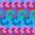
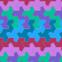
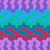
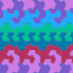
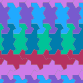

Polykites: isohedral number 6
5 shapes · each shown with one of its simplest grid-aligned tilings, coloured by orbit · all galleries · family table


10-kite · k = 6


10-kite · k = 6


14-kite · k = 6


14-kite · k = 6


14-kite · k = 6